LGCSE Mathematics Question Bank
Practice questions from past ECoL examination papers, organized by topic.
Mensuration
135.
The diagram shows a side view of a slice of a cylindrical cake.
The top of the slice is a sector of angle 120° while the side is a rectangle of dimensions 24 cm by 20 cm as shown.
(a) Show that the arc length of the top is 5π.
(b) Leaving your answer in terms of π, find the surface area of the slice excluding the top and the base.
The top of the slice is a sector of angle 120° while the side is a rectangle of dimensions 24 cm by 20 cm as shown.
(a) Show that the arc length of the top is 5π.
(b) Leaving your answer in terms of π, find the surface area of the slice excluding the top and the base.
(a) ......................... [2]
(b) ......................... [3]
Paper 1
136.
The diagram shows the parts of a circle, centre O.
Label the parts of the circle indicated.
Label the parts of the circle indicated.
(a) ......................... [1]
(b) ......................... [1]
Paper 1
137.
The shape is a cuboid and it is made of dough.
The dimensions of the cuboid are 24 cm × 30 cm × 2 cm.
Cylindrical biscuits of diameter 6 cm are cut out of the cuboid.
(a) State the number of edges the biscuit has.
(b) Calculate in terms of π, the amount of dough needed for making one biscuit.
(c) (i) Find the largest number of whole biscuits that can be cut from the cuboid.
(ii) For the number of biscuits in part (c)(i), calculate, in terms of π, the amount of dough not used.
The dimensions of the cuboid are 24 cm × 30 cm × 2 cm.
Cylindrical biscuits of diameter 6 cm are cut out of the cuboid.
(a) State the number of edges the biscuit has.
(b) Calculate in terms of π, the amount of dough needed for making one biscuit.
(c) (i) Find the largest number of whole biscuits that can be cut from the cuboid.
(ii) For the number of biscuits in part (c)(i), calculate, in terms of π, the amount of dough not used.
(a) ......................... [2]
(b) ......................... [2]
(c)(i) ......................... [2]
(c)(ii) ......................... [4]
Paper 1
138.
Calculate the volume of a cube that has a cross-sectional area of 36 cm2.
.................................cm3 [2]
Paper 1
79.
The diagram shows a container in the form of a cube.
The container is completely filled with water of volume 3375 cm³.
(a) Calculate the total surface area of the cube.
The container is completely filled with water of volume 3375 cm³.
(a) Calculate the total surface area of the cube.
......................... cm2 [2]
(b) All the water from the cube is poured into the
cylinder which already has some water as shown in the
diagram.
The cylindrical container has radius 8 cm and height 14 cm.
(c) Another cylinder has radius 8 cm and height 15 cm.
It contains water to a depth of 3 cm as shown in the diagram.
Calculate the total surface area of the container which is in contact with water.
The cylindrical container has radius 8 cm and height 14 cm.
(b) ......................... [2]
It contains water to a depth of 3 cm as shown in the diagram.
Calculate the total surface area of the container which is in contact with water.
(c) ......................... cm2 [3]
Paper 3
80.
(a) The diagram shows an open cylindrical container of
radius 15 cm.
The container is filled with 30 500 cm³ of a liquid.
(i) Show that the height h, of the container is 43.1, correct to one decimal place.
The container is filled with 30 500 cm³ of a liquid.
(i) Show that the height h, of the container is 43.1, correct to one decimal place.
......................... [3]
(ii) Calculate the total surface area of the container.
......................... cm2 [3]
(iii) One cm³ of the liquid has a mass of 0.80 g. Find the mass of the liquid, in kilograms.
......................... kg [2]
Paper 3
81.
The diagram shows a cylindrical container resting on a
horizontal surface.
The container has a diameter of 16 cm and length 30 cm.
The container is half-filled with water as shown in the diagram.
(a) Calculate the total surface area of the container in contact with the water.
The container has a diameter of 16 cm and length 30 cm.
The container is half-filled with water as shown in the diagram.
(a) Calculate the total surface area of the container in contact with the water.
......................... cm2 [3]
(b) Calculate the volume of water in the container.
......................... cm3 [2]
(c) Water leaks from the container at a rate of 5 cm³ per second. Calculate the time, in minutes and seconds, it takes the container to be emptied.
......................... min ......................... sec [2]
Paper 3
82.
The diagram shows a solid model made up of a
cuboid and four identical cylinders.
The cuboid measures 8 cm by 8 cm by 6 cm while each cylinder has a diameter of 3 cm and a height of 1 cm.
(a) State:
(i) The number of edges of the cuboid,
The cuboid measures 8 cm by 8 cm by 6 cm while each cylinder has a diameter of 3 cm and a height of 1 cm.
(a) State:
(i) The number of edges of the cuboid,
......................... [1]
(ii) The number of faces on the top of the cuboid.
......................... [1]
(b) Calculate:
(i) The volume of the cuboid,
(i) The volume of the cuboid,
......................... cm3 [2]
(ii) The area of the top of the cylinders,
......................... cm2 [2]
(iii) The total surface area of the model.
......................... cm2 [3]
Paper 3
83.
The diagram shows a cylindrical container of radius 50 cm.
The container is filled with 942 600 cm³ of water.
The depth of the water is h cm.
Use .
(a) Show that h is 120 cm.
The container is filled with 942 600 cm³ of water.
The depth of the water is h cm.
Use .
(a) Show that h is 120 cm.
......................... [3]
(b) Calculate the area of the curved part of the cylinder that is in contact with water.
......................... cm2 [2]
Paper 3
84.
Neo builds toy towers using identical cylinders and identical cuboids.
A tower of height 38 cm is built from three cylinders and two cuboids as shown below.
Let x cm be the height of one cylinder and y cm be the height of one cuboid.
(a) Form an equation connecting x and y.
A tower of height 38 cm is built from three cylinders and two cuboids as shown below.
Let x cm be the height of one cylinder and y cm be the height of one cuboid.

(a) Form an equation connecting x and y.
......................... [2]
(b) Neo then builds the second tower of height 51 cm
using two cylinders and five cuboids as shown.
This new information is represented by the equation
.
Use the above equation and the one in (a) to find the height of a cylinder and a cuboid.

This new information is represented by the equation
.
Use the above equation and the one in (a) to find the height of a cylinder and a cuboid.
Height of cylinder = ......................... cm Height of cuboid = ......................... cm [4]
Paper 3
85.
(a) Pule has 3 identical cuboids, each has length l cm and width
w cm.
He places the 3 cuboids together on a flat surface to make the shape shown below.
The distance around the base of this shape is given by an equation , while the area of the base of the shape is given by an equation .
(i) Using equations for the distance and the area, form an equation in w and show that it reduces to .
He places the 3 cuboids together on a flat surface to make the shape shown below.
The distance around the base of this shape is given by an equation , while the area of the base of the shape is given by an equation .
(i) Using equations for the distance and the area, form an equation in w and show that it reduces to .
......................... [3]
(ii) Solve the equation in (b)(i).
w = ......................... or w = ......................... [2]
(iii) Find the length of the cuboid.
l = ......................... cm [2]
(iv) The height of the cuboid is 4 cm. Calculate the volume of each cuboid.
......................... cm3 [2]
(b) Thabiso places 6 cylinders on the three cuboids as shown.
The first row of cylinders leaves an equal distance of 4.5 cm on either side.
Find the diameter of each cylinder.
The first row of cylinders leaves an equal distance of 4.5 cm on either side.

Find the diameter of each cylinder.
......................... cm [2]
Paper 3
86.
The diagram shows a closed cylindrical petrol tank
with the painted area represented by the shaded part.
The tank has a diameter of 1.8 m and a length of 12 m.
The length of the shaded part is 4 m.
(a) Sketch a net of the tank.
The tank has a diameter of 1.8 m and a length of 12 m.
The length of the shaded part is 4 m.
(a) Sketch a net of the tank.
See diagram [2]
(b) Calculate the area of the circular end of the tank.
......................... m2 [2]
(c) Calculate the volume of the tank.
......................... m3 [2]
(d) Calculate the area of the curved unpainted part of the tank.
......................... m2 [3]
Paper 3